CV Exercise 1 - Introduction to Matlab and Edge Detection
Cole MacLean and Suren Oganesian October 10, 2016
Contents
Lab 1-1 Image Swap
%create black and white squares to use in producing box patterns blackbox = zeros(500,500); whitebox = ones(500,500); %color channels are created by stacking black and whiteboxes in appropriate %order channel1 = [blackbox,whitebox;blackbox,whitebox]; channel2 = [blackbox,blackbox;whitebox,whitebox]; channel3 = [whitebox,blackbox;blackbox,blackbox]; %combine channels into 3-D RGB array color = cat(3, channel1, channel2, channel3); imshow(color)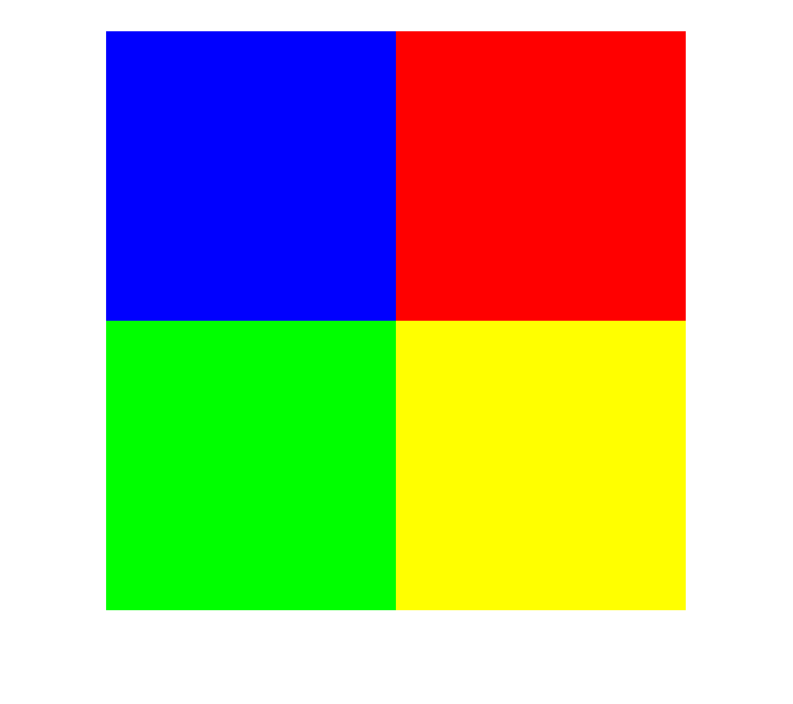
Lab 1-4 Image Split
clooney = imread('lab1/images/clooney.jpg'); %image_swap is a defined function that swaps the left and right image %parts after the user inputted split column (214 in this case) imshow(image_swap(clooney,214))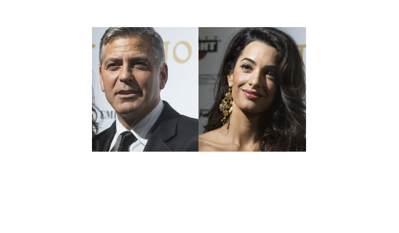
Lab 1-6 Image Fusing
%Given 2 images, overlap the first's foreground ontop of the second hand = imread('lab1/images/hand.jpg'); building = imread('lab1/images/mapfre.jpg'); buildR = building(:,:,1); buildG = building(:,:,2); buildB = building(:,:,3); handR = hand(:,:,1); handG = hand(:,:,2); handB = hand(:,:,3); bin_hand = im2bw(hand,0.1); bw_pxs = bin_hand == 1; buildR(bw_pxs) = handR(bw_pxs); buildG(bw_pxs) = handG(bw_pxs); buildB(bw_pxs) = handB(bw_pxs); fuse = cat(3,buildR,buildG,buildB); imshow(fuse)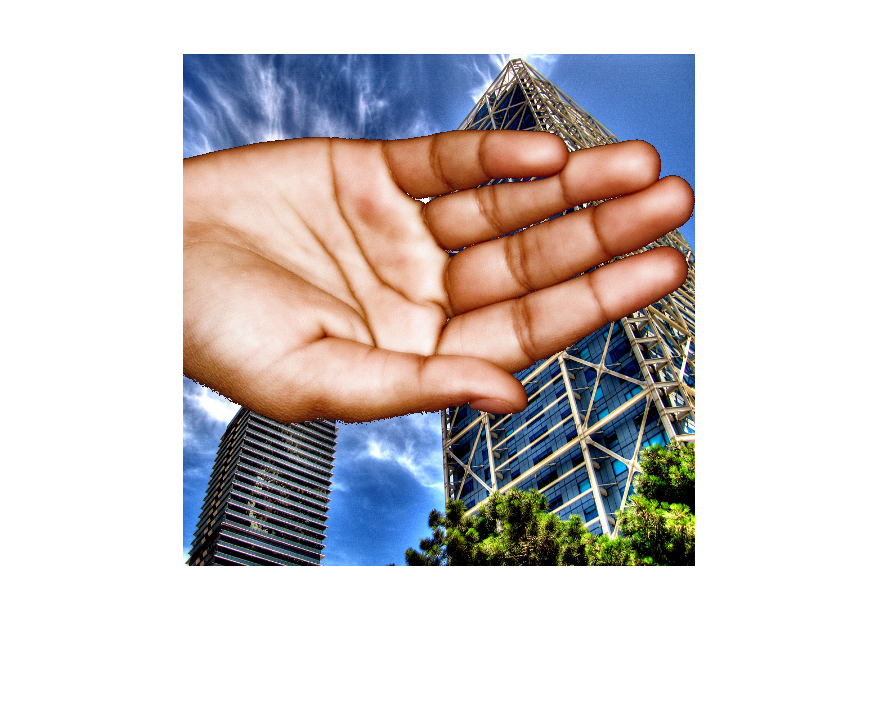
Lab 2-1 Image Edge Detection
%Comparing Edge Detection Algorithms %load testing images color_starbucks = imread('lab2/images_video/starbuck.jpg'); starbucks = rgb2gray(color_starbucks); dolphin = rgb2gray(imread('lab2/images_video/doulphin.jpg')); dog = rgb2gray(imread('lab2/images_video/dog.jpg')); fabulous = rgb2gray(imread('lab2/images_video/fabulous.jpg')); %edge detect function takes image an using various detection images to view %possible edges edge_detect(starbucks); best_edge = edge(starbucks,'Prewitt',0.1); %overlap function takes original image, the edges and which color channel %to use as edge enhancement (1 - R, 2- G, 3 - B) imshow(overlap_edge(color_starbucks,best_edge,1)) snapnow; %test best edge detetor parameters on other images imshow(edge(dolphin,'Prewitt',0.1)) snapnow; imshow(edge(dog,'Prewitt',0.1)) snapnow; imshow(edge(fabulous,'Prewitt',0.1)) snapnow;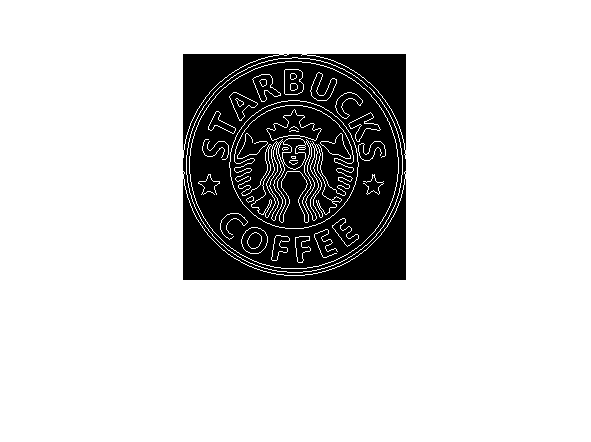 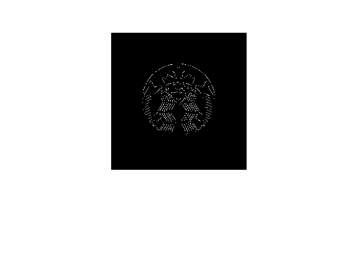 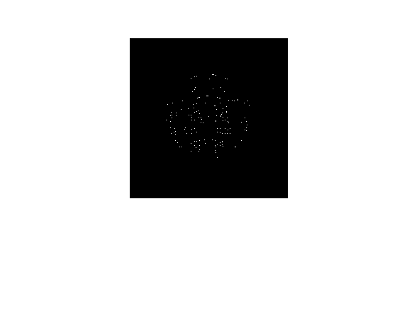
 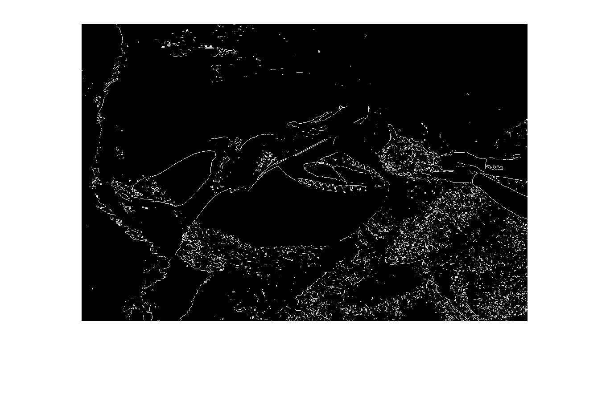 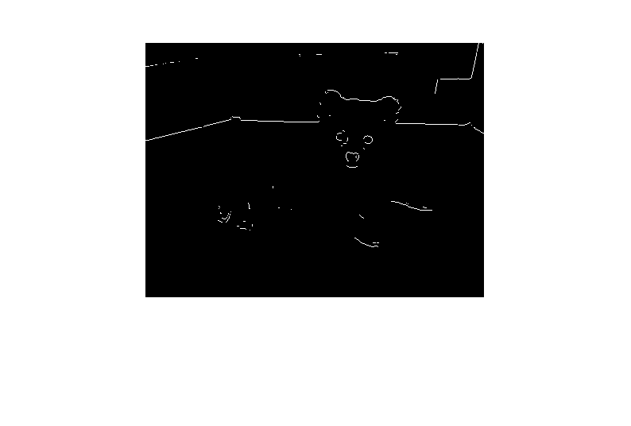 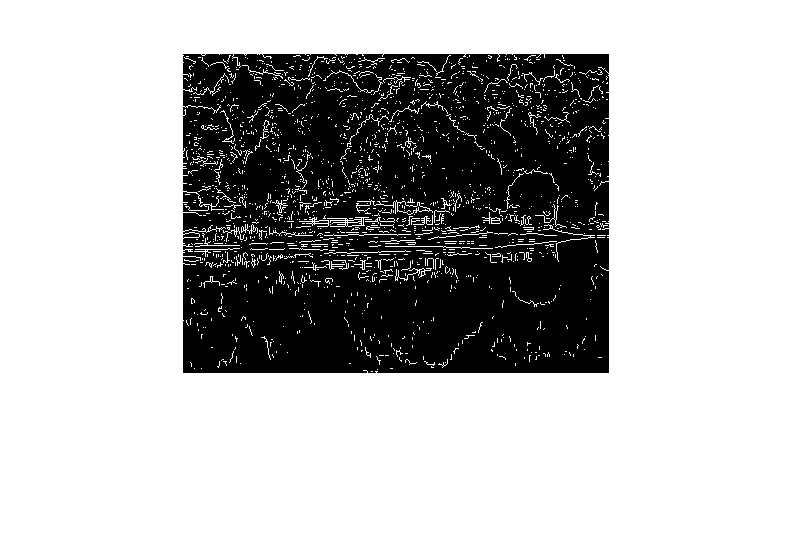
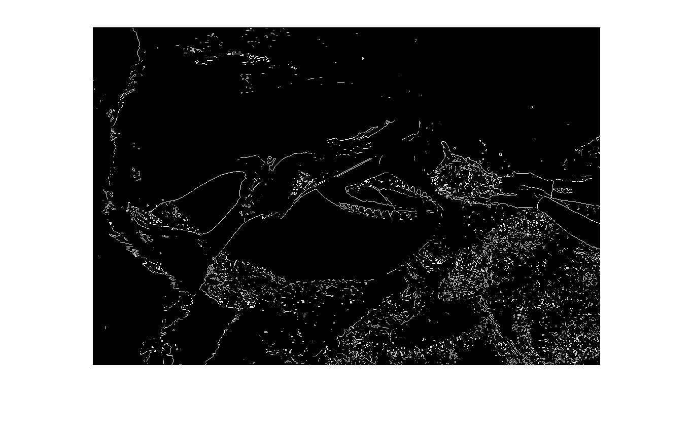 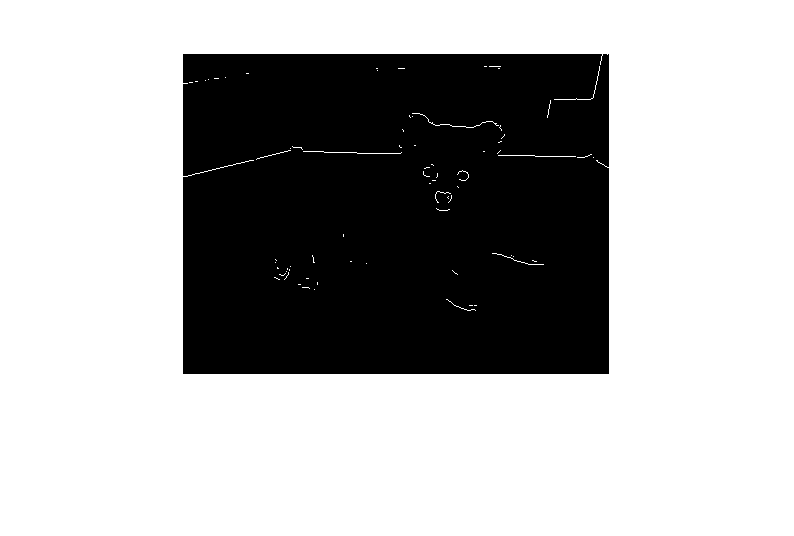 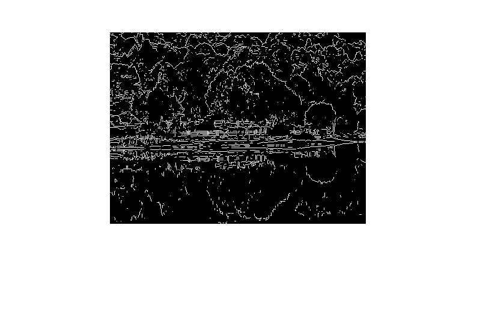 2-1 Discussion
The above images display various edge detection algorithms and different parameters for each algorithm to test which algorithm and parameters work best for detecting the edges of the starbucks logo. 2 detectors stand out as being very good at detecting the edges. These are the Sobel and Prewitt edge detectors, with thresholds both set to 0.1. The Prewitt detector just edges out (Ha!) the Sobel detector, with the detected edges being slightly crisper and more complete then the Sobel, making it the optimized detector. Sobel and Prewitt detectors with higher thresholds performed poorly in detecting edges, and the zerocross edge detector was completely unable to detect edges at any threshold level. This optimal edge detector was then used on 3 other images, to varying degrees of success. It was able to capture the very detailed edges of the fabulous image, but performed poorly in accuractely outlining both the dolphin and dog images.
- We used 3 detector algorithms for edge detection - Sobel, Prewitt and zerocross
- For the starbucks image, the best edge detector was Prewitt thresholded at 0.1
- Optimal parameter was threshold at 0.1
- Advantages of this edge detector on other images is that it is very good at obtaining the detailed edges in intricate images like fabulous, but a disadvantage is that it can cause noise as seen in the dolphin image where the water bubbles are captured as edges
- To correct for the noisey edge detection that this detector creates, the parameters could be changed to optimize for each individual image. This is obviously a tedious task, and a comprimise between accuracy across an image corpus is likely needed.